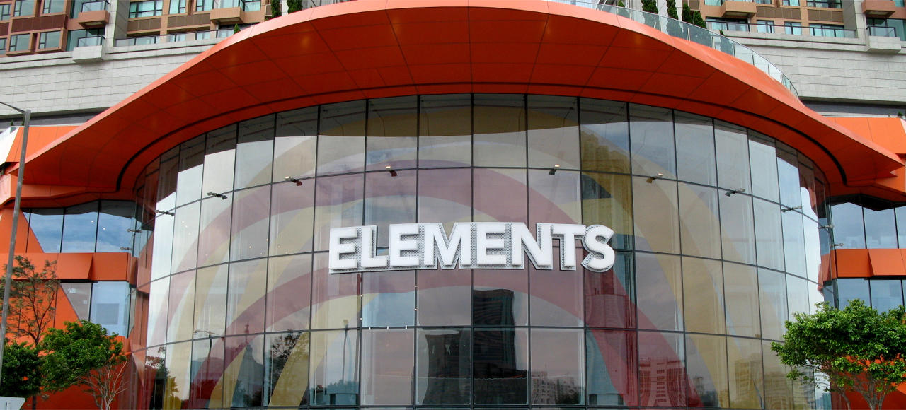
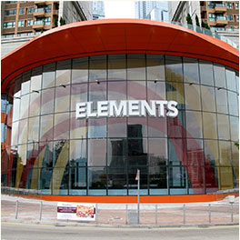
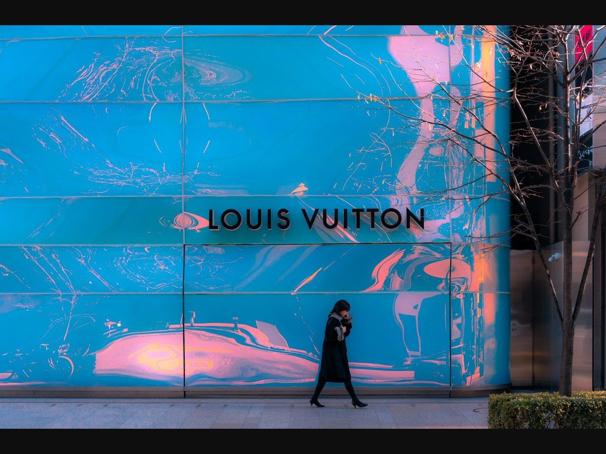
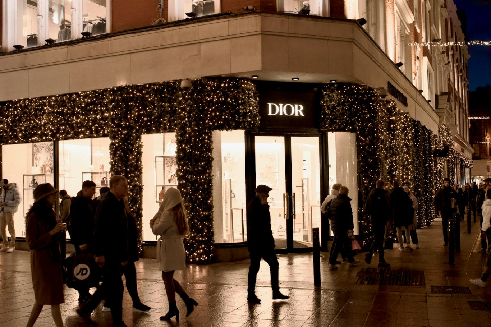
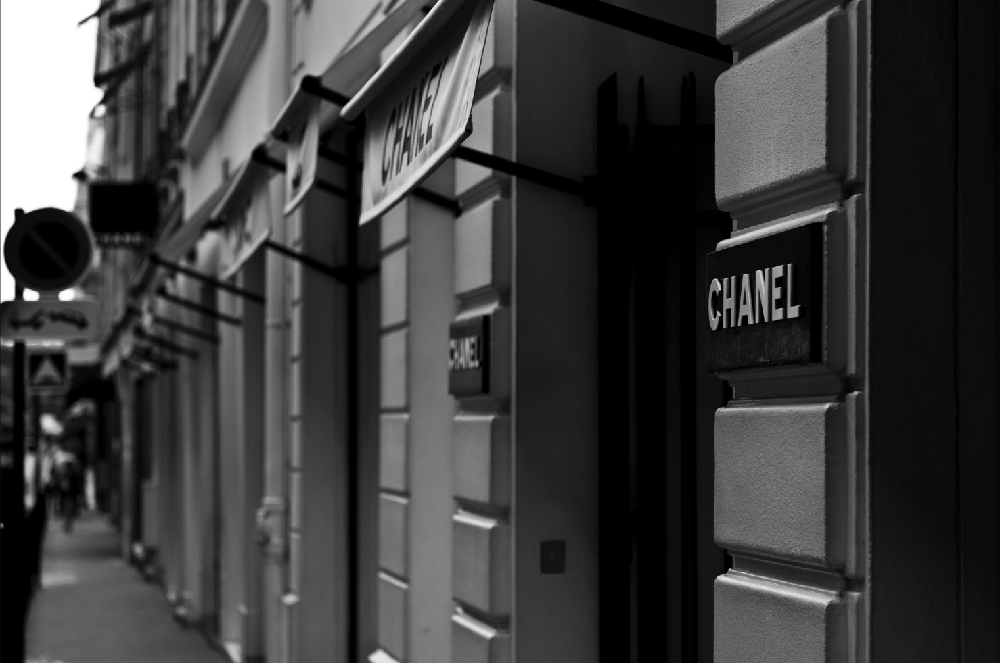
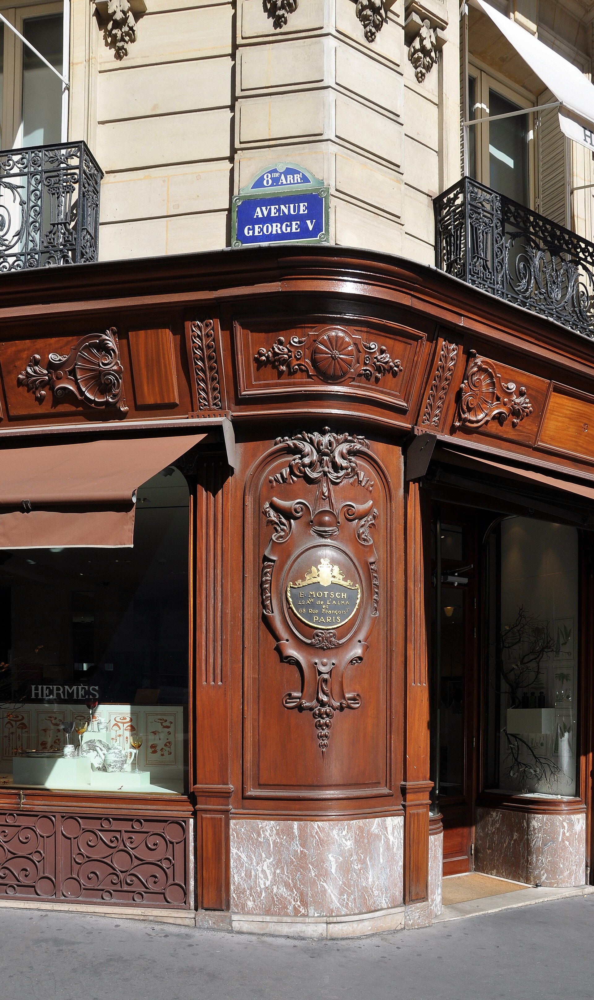
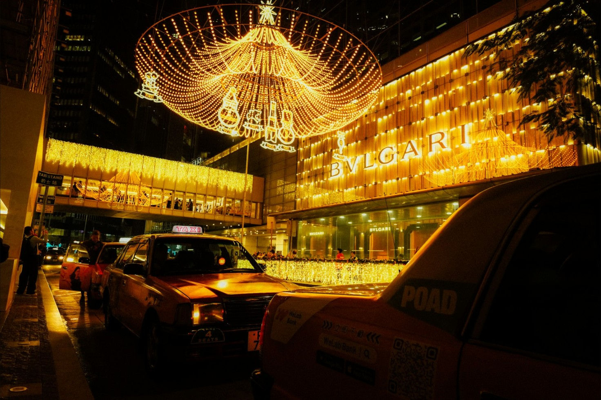
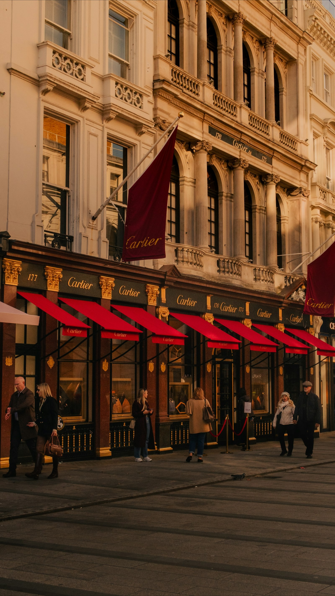
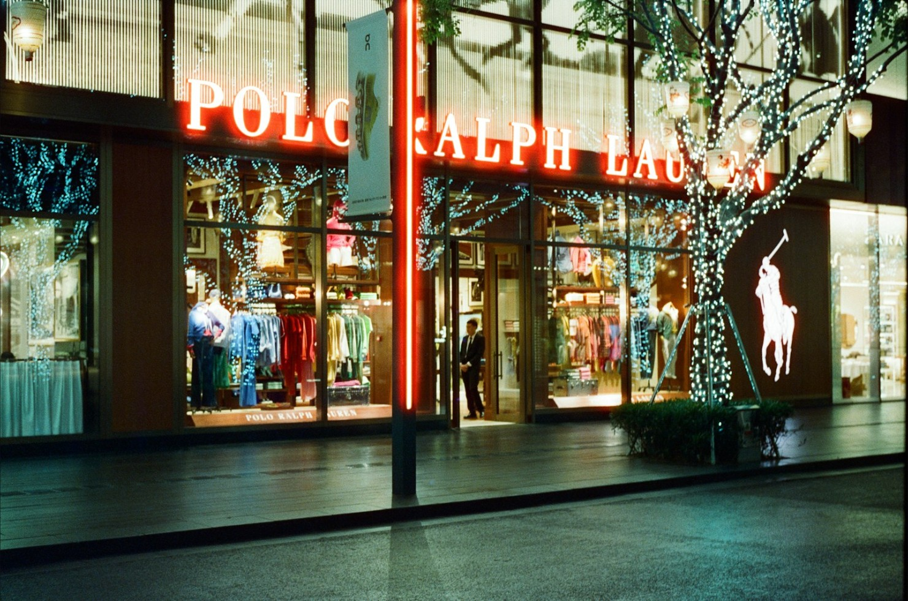

Iconic retail
destinations.
Premier development and leasing consultancy behind many of Asia’s most iconic, luxury retail destinations.
The art of
placemaking.
A forward-thinking investor in the built environment — anchored by art and culture.
The Art of Placemaking,
realised.
A Hong Kong retail destination anchored by art and culture — and the partner who can build it.
Presented by Paul Husband · Husband Retail · Hong Kong, 2026
What we’ll cover.
“Art and culture are upstream from retail.”
— Benjamin Cha, Serakai
You have already named the next era of retail. This is that conviction, built — and Husband Retail is the operator who can build it.
The mass-market mall is over.
The culture-anchored destination is the opening.
Placemaking anchored by art and culture is no longer the soft option. In this market, it is the value strategy.
The team behind Asia’s iconic retail destinations.
Husband Retail is a boutique retail real-estate consultancy, founded in Hong Kong in 1998. We plan, lease, position and asset-manage luxury retail destinations for the developers and investors who own them — the same dynamic retail, mixed-use and cultural landmarks Serakai sets out to shape.
It started with Pacific Place.
In 1988, Paul Husband led the marketing of Pacific Place in Hong Kong — the first large-scale retail centre in Asia conceived, before it opened, to be a brand and a destination, not a utility shopping centre. The idea was radical then: a place to shop could carry meaning.
“Pacific Place was the first large-scale retail centre in Asia to intend to be a destination brand — as opposed to what I call a utility shopping centre.”— Paul Husband
That conviction became Husband Retail in 1998. Across three decades it has shaped the destinations that define their cities. As Asia grew into the world’s most advanced retail market, the firm turned from a door-opener into the keeper of its playbook — now exporting it worldwide, and bringing AI to the visitor journey.

The reference firm for luxury retail destinations in Asia.
For over three decades, Husband Retail has been the specialist owners call when a destination has to lead its market. Paul Husband created Pacific Place — Asia’s first destination-brand retail centre — and wrote the field’s defining book, The Cult of the Luxury Brand. The firm has shaped the category ever since.
100+ destinations advised. 60+ planned and leased.




Among them, DLF Emporio in New Delhi — India’s first international-standard luxury retail centre.
Every format of luxury retail — across three continents.
Luxury malls
The Landmark, DLF Emporio, Seoul IFCThe benchmark luxury centres of their cities
Integrated resorts
Galaxy Macau, The Venetian MacauRetail at the scale of the world’s great resorts
Premium outlets
Value Retail — Suzhou & Shanghai VillagesChina’s premium-outlet pioneers
Mixed-use & supertall
MahaNakhon, Elements, Merdeka 118Retail inside landmark towers
Heritage & street estates
Covent Garden, LondonPlace, public realm and culture as the draw
Emerging markets
Yangon, Lusail, Dubai d3First-to-market luxury in new cities
Hong Kong · Macau · Mainland China · Korea · Thailand · Malaysia · India · Myanmar · UAE · Qatar · United Kingdom.
A continuous record of realised destinations.
Realised across Asia, the Middle East and Europe.
The names behind the places.
Developers, investors & founders
Hongkong Land · MTR Corporation · DLF · Galaxy · Capital & Counties · AIG Global Real Estate · Permodalan Nasional Berhad · New World Development · Value Retail · Qatari Diar · Serge Pun & Associates (Yoma) · KKR · Brookfield · Morgan Stanley
We sit where Serakai sits — between institutional capital and the brands that define a place.
The brands we lease and represent.








A selection of the maisons we have leased and represented across Asia.
Chanel image: ashton / Wikimedia Commons (CC BY 2.0). Other storefronts via Unsplash.
A position that is hard to assemble — and harder to copy.

“One of the world’s leading experts on luxury and retail in Asia.”
Design, leasing, positioning and asset management — under one roof, with a team that has shaped Asia’s landmark destinations.
We publish the market’s field guide.
The Husband Retail Global Retail Report (January 2026) reads the luxury market for owners and investors — the macro outlook, the experiences redefining the store, the concepts setting the pace, and the deals reshaping the market.
The art of placemaking — anchored by art and culture.
A forward-thinking investor in the built environment, creating successful places in Tokyo, Hong Kong, Bangkok and beyond. A cultural think tank and R&D hub in Serakai Studio. And a new type of place — the contemporary salon — prototyped at GOLD, in Wong Chuk Hang.
Creating successful places.
A forward-thinking investor in the built environment
Creating successful places embedded in neighbourhoods — Tokyo, Hong Kong, Bangkok and beyond.
The operator that delivers the place
Concept, retail mix, leasing and positioning — turning a vision for a place into a fully realised, market-leading destination.
Property investment, development & management.
Investor and developer of the asset
Blending property investment, real estate development and investment management to create vibrant spaces.
The asset-level engine of returns
Leasing power, tenant mix and asset management that turn the investment into income — and a destination that holds its value.
Visual culture as the anchor.
The cultural think tank — Serakai Studio
GOLD, CONG and the contemporary salon — visual arts, fashion, music, design and technology, advancing the cultural discourse in Asia.
Culture made commercial — without losing the culture
We translate cultural ambition into a retail destination that performs: curation that draws the maisons, footfall that funds the programme.
GOLD is the prototype.
The destination is the next move.
Serakai has the cultural intelligence, the conviction and the salon. What turns the contemporary salon into a leased, market-leading destination is a retail engine — concept, retail mix, leasing, asset management.
That engine is Husband Retail.
The Grand Salon
The contemporary salon, realised at destination scale — a Hong Kong place where art and culture are the anchor, and retail, dining and programming orbit them.
A destination designed around culture — not around the shop.
Two forces, one destination.
01Social sustainability
A place that strengthens the social fabric of the city, not just its retail mix.
02Cultural intelligence
Culture as the layer that reads taste and shapes the offer — art upstream of retail.
03Living & belonging
A destination people return to for meaning and belonging — not only to buy.
04Synthesis of heritage & future
Heritage and the contemporary held in one continuous experience.
05Future 2.0
Beyond the experience-mall: cultural immersion as the product itself.
01AI concierge
An intelligent guide across the whole visit — pre-, in-place and post-visit.
02AR & public realm
Layered digital art and wayfinding across the public spaces.
03Footfall & dwell intelligence
Live heatmaps and route analytics that continuously tune the place.
04Tenant & media analytics
Leasing and media decisions driven by real visitor data.
AI beneath the culture — not gadgetry.
CONG asks “What is intelligence?” Here is one answer, in built form. Husband Retail’s AI framework — delivered this year for Shaftesbury Capital, owner of Covent Garden — runs as the destination’s operating layer, lifting both the guest experience and the asset’s economics.
Guest
AI concierge & digital-journey orchestration · AR in the public realm
Estate
Footfall intelligence & dwell heatmaps · tenant & leasing analytics · media monetisation
Led by the culture-first benchmarks — Gentle Monster’s gallery-stores, Gucci Chengdu’s AI “living fresco,” Loewe’s city-wide treasure hunt.
From salon and journal to a destination brand.
The Grand Salon puts the Serakai name on a category-defining Hong Kong landmark — then becomes the template for Tokyo and Bangkok. The art of placemaking, advancing the cultural discourse in Asia and the social sustainability of the city — at scale.
From Asia’s No.1 specialist to a global top-three consultancy.
Today
Asia’s leading specialist in luxury retail destinations.
2035
One of the world’s top-three retail-space consultancies — Asia, the Middle East, Europe and the Americas.
The edge
The pioneer of AI in retail visitor journeys — exporting Asia’s playbook worldwide.
Equity today buys into a firm at the inflection point of that growth.
The pioneer of AI in retail visitor journeys.
Retail destinations are laggards in AI while the luxury brands race ahead. Husband Retail closes that gap — designing the AI-enabled visitor journey as a core discipline, not a bolt-on. The Shaftesbury Capital report is the first of many.
What an equity partner is buying into.
A partner, not a vendor.
Paul curates the retail concept; you structure and lead — the division of labour you already trust. An equity partnership in Husband Retail aligns us fully.
And our discipline keeps it honest: we only handle leasing for developments we have shaped.
From concept to a fully leased destination — and the asset that sustains it.
Husband Retail runs the implementation, end to end.
Let’s make the art of placemaking the art of retail.
Anchored by art and culture. Built, leased and sustained by Husband Retail.
Paul Husband · Husband Retail · Hong Kong · husband-retail.com